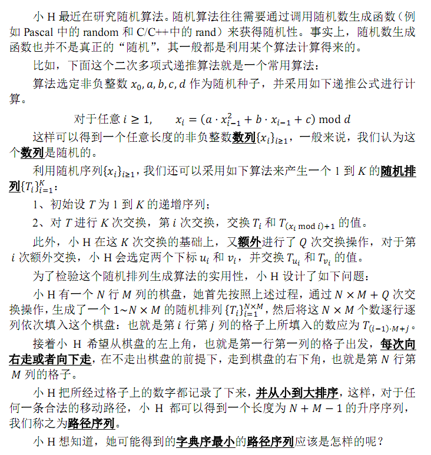
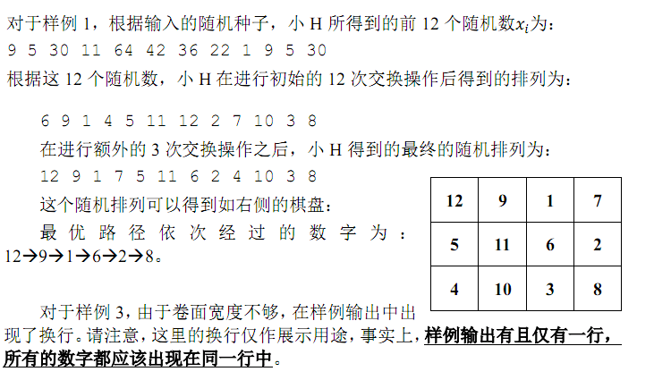

第1行包含5个整数，依次为 x_0,a,b,c,d ，描述小H采用的随机数生成算法所需的随机种子。第2行包含三个整数 N,M,Q ，表示小H希望生成一个1到 N×M 的排列来填入她 N 行 M 列的棋盘，并且小H在初始的 N×M 次交换操作后，又进行了 Q 次额外的交换操作。接下来 Q 行，第 i 行包含两个整数 u_i,v_i，表示第 i 次额外交换操作将交换 T_(u_i )和 T_(v_i ) 的值。

第1行包含5个整数，依次为 x_0,a,b,c,d ，描述小H采用的随机数生成算法所需的随机种子。第2行包含三个整数 N,M,Q ，表示小H希望生成一个1到 N×M 的排列来填入她 N 行 M 列的棋盘，并且小H在初始的 N×M 次交换操作后，又进行了 Q 次额外的交换操作。接下来 Q 行，第 i 行包含两个整数 u_i,v_i，表示第 i 次额外交换操作将交换 T_(u_i )和 T_(v_i ) 的值。
输出一行，包含 N+M-1 个由空格隔开的正整数，表示可以得到的字典序最小的路径序列。
1 3 5 1 71
3 4 3
1 7
9 9
4 9
1 2 6 8 9 12 
本题的空间限制是 256 MB，请务必保证提交的代码运行时所使用的总内存空间不超过此限制。
一个32位整数（例如C/C++中的int和Pascal中的Longint）为4字节，因而如果在程序中声明一个长度为 1024×1024 的32位整型变量的数组，将会占用 4 MB 的内存空间。
2≤N,M≤5000
0≤Q≤50000
0≤a≤300
0≤b,c≤108
0≤x0<d≤1081≤ui,vi≤N×M